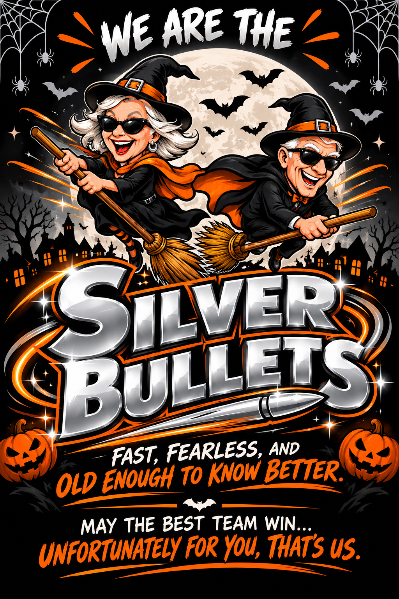
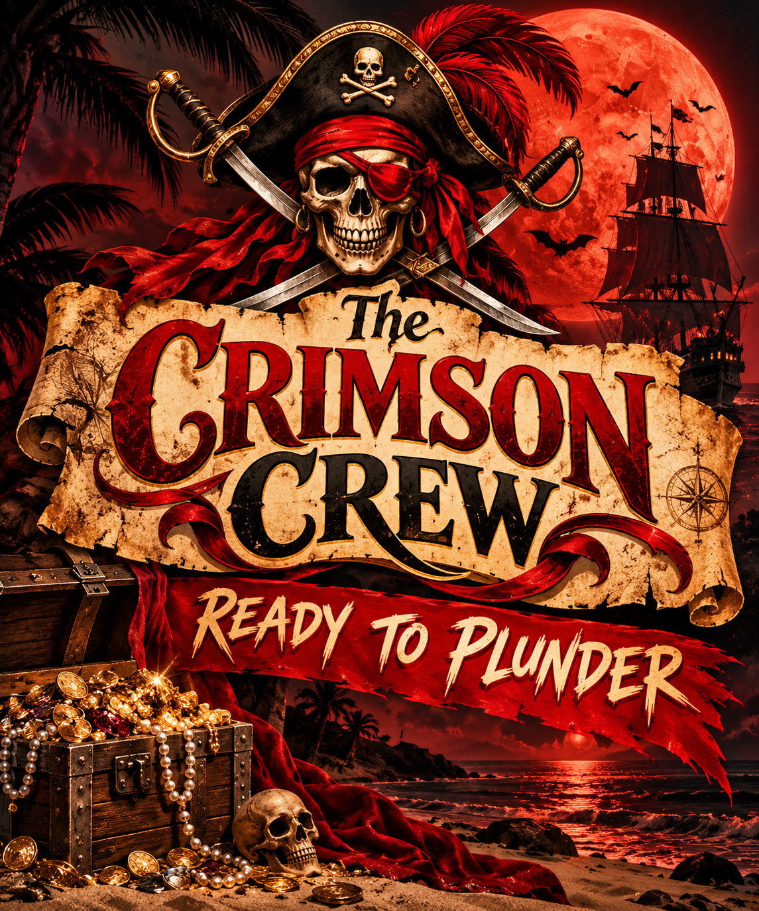

Green · Operation Nothing To See Here
Area 51 Bureau
The truth is out there. So is the trash.
Threat level: Classified, mostly by accident · 3 hairballs · 1 catnip
 Wanted everywhere, caught nowhere.
Wanted everywhere, caught nowhere.
The dossier room
Seven teams. One inspector. Zero mercy.
Green · Operation Nothing To See Here
The truth is out there. So is the trash.
Threat level: Classified, mostly by accident · 3 hairballs · 1 catnip

Black · Operation Eight Legs, No Clock
Last to arrive. First to apologize. Never on time.
Threat level: Chronically fashionably late · 9 hairballs · 4 catnip

Pink · Operation Nothing, Allegedly
Wanted everywhere. Caught nowhere.
Threat level: Unknown. Clueso refuses to rate himself. · 0 hairballs · 5 catnip

Orange · Operation Hot Air
Fire-themed. Balloon-powered. Counting is hard.
Threat level: Extra crispy, extra confident · 8 hairballs · 7 catnip

Silver · Operation Slow, Unsure, Disoriented
The only bullet that needs directions.
Threat level: Low velocity, high laundry · 3 hairballs · 1 catnip

Red · Operation Where Are They
Allegedly exists. Case file: pending.
Threat level: Unknown. Clueso has not met them. · Unrated

White · Operation Loose Ends
Tight name. Loose story.
Threat level: Briefs filed, dignity pending · 7 hairballs · 3 catnip